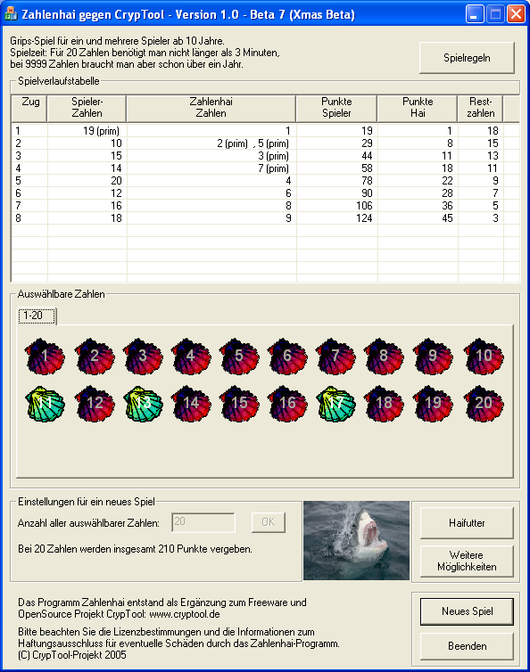
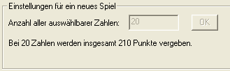
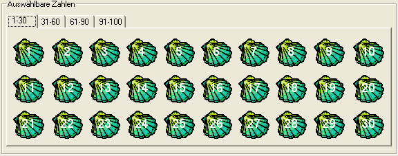
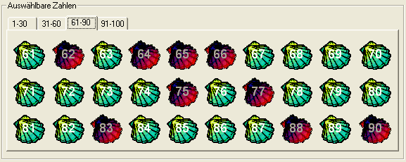
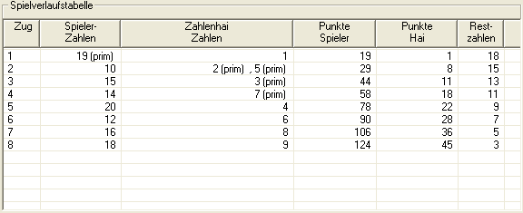
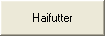
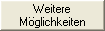
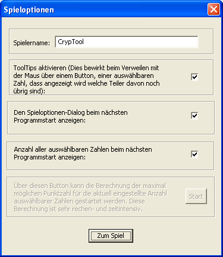
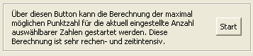
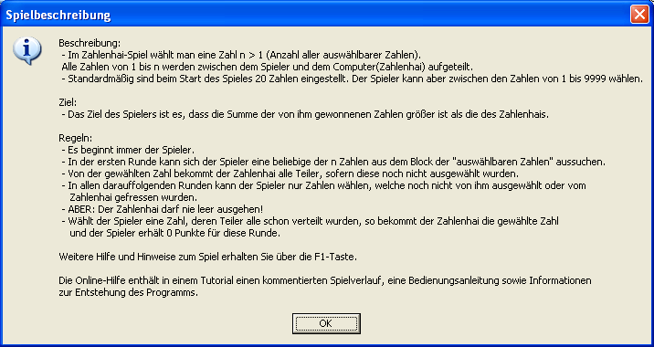

Bedienung des Zahlenhai-Spiels
Im Folgenden wird die Bedienung des Zahlenhai-Spiels anhand der Dialogfenster erläutert.
Das Spiel beginnt, indem Du Dir eine Zahl auswählst -- der Zahlenhai bekommt die Teiler davon. Diese gewählte Zahl und deren Teiler werden im Block mit dem Zahlenvorrat ausgegraut, sie sind nicht mehr auswählbar (nicht mehr frei).
Nachdem Du und der Zahlenhai jeweils einen Zug gemacht haben, geht es folgendermaßen weiter:
Du nimmst Dir eine neue Zahl, der Zahlenhai bekommt die Teiler bis alle Zahlen verteilt sind.
Dein Ziel ist es, dass die Summe Deiner Zahlen größer ist als die Summe der Zahlen, die der Zahlenhai gefressen hat.
Das Spiel lehrt spielerisch den Umgang mit Teilern und Primzahlen und wurde urspünglich für Schüler konzipiert.
Immer wenn eine Primzahl gewählt wurde (egal ob von Dir oder vom Zahlenhai) wird in der Spielverlaufstabelle hinter diese Zahl die Markierung "(prim)" geschrieben, um anzuzeigen, dass es sich bei der Zahl um eine Primzahl handelt.

In der Gruppierung "Einstellungen für ein neues Spiel" kannst Du den Zahlenvorrat bestimmen, also mit wieviel Zahlen Du spielen möchtest. Diese Eingabe muss durch den "OK"-Knopf oder durch die Enter-Taste bestätigt werden. Beim ersten Aufruf des Programms enthält dieses Feld den Wert 20.
Drückst Du "Neues Spiel", bleibt die zuletzt gewählte Zahl stehen. In den Spieloptionen kannst Du festlegen, ob sich das Programm diese Zahl für den nächsten Programmstart merkt oder nicht.

Wenn Du den "OK"-Button drückst, füllt sich der Zahlenvorrat mit den Muscheln, die man wie Buttons bedienen kann. Es sind auf dem Block nur maximal 30 Muscheln gleichzeitig sichtbar. Wenn Du Dich für eine Anzahl über 30 entscheidest, erscheinen über dem Block Reiter, über die Du auf alle anderen Zahlen-Muscheln zugreifen kannst. Du kannst Dich mit dem Tabulator und mit den Pfeiltasten durch die Zahlen bewegen und diese dann auch mit der Enter-Taste auswählen. Zur besseren Lesbarkeit sind alle Muscheln in dem Zahlenvorrat in weiß beschriftet. Beim Start sind alle Muscheln grün, d.h. Du kannst jede von ihnen auswählen.

Jede Zahl, die Du ausgewählt hast, und auch jeder Teiler, den der Zahlenhai von dieser Zahl gefunden hat, wird rot gefärbt und kann somit nicht weiter benutzt werden. Alle roten Zahlen sind verbraucht oder "gefressen" und können von Dir in den folgenden Zügen nicht mehr gewählt werden.

Die Spielverlaufstabelle zeigt den jeweils aktuellen Punktestand an. Dabei unterteilt sich die Liste in sechs Spalten:

|  | Der Button "Haifutter" wird immer dann aktiv, wenn es im Spiel Zahlen gibt, die keine Teiler mehr haben und selber auch keine Teiler mehr sind. Wenn Du auf diesen Button drückst, werden alle diese Zahlen dem Zahlenhai sofort zugeschrieben, da der Hai sie auf jeden Fall bekommen würde. |
|
|
|  | Mit dem "Weitere Möglichkeiten" Button öffnet sich das Spieloptionen-Fenster, das auch vor dem ersten Aufruf gezeigt wurde. |
In dem Fenster "Spieloptionen" hast Du folgende Möglichkeiten:

Mit dem Button "Start" kannst Du Dir anzeigen lassen, wie viele Punkte man maximal bei welcher Anzahl n (Zahlenvorrat) bekommen kann. Die Berechnung dieser Werte ist sehr rechenintensiv: deshalb wurde die Berechnung für Zahlenvorräte < 23 bereits vorgenommen: Bei diesen Zahlen erscheint das Ergebnis sofort. Bei Zahlenvorräten größer 22 wirst Du gewarnt, dass die Berechnung sehr lange dauern kann: Wir schätzen die Rechendauer der derzeit implementierten Suche, bei der Anzahl n=23 auf einem 3 GHz PC auf ca. 80 Tage bei 100% Systemauslastung. Neben der maximal möglichen Punktezahl wird auch noch mit ausgegeben, welche Zahlen Du in welcher Reihenfolge drücken solltest, um diese maximale Punktzahl zu erreichen. Dieser optimale Weg ist nicht immer eindeutig, oft können einzelne direkt aufeinanderfolgende Zahlen in der Reihenfolge der Auswahl miteinander vertauscht werden. Zusätzlich erhält man noch einen Tipp, mit welcher Zahl man das Spiel beginnen muss, um möglichst viele Punkte zu erreichen.
Über den Button "Spielregeln", am oberen Rand des Spielfensters, erhältst Du jederzeit eine kurze Zusammenfassung der Spielregeln.

Wenn Du Näheres zur Entstehungsgeschichte des Zahlenhai-Spieles erfahren willst, klicke hier
Aus rechtlichen Gründen müssen wir explizit auf die Lizenzbestimmungen / Haftungsausschluss hinweisen.